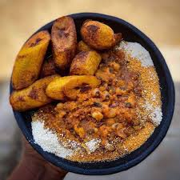

Home
Gob3 (Beans and Gari)

Description
Gobɛ, also known as beans and gari, is a traditional Ghanaian meal made with boiled black-eyed peas, palm oil, and a sprinkle of gari. It’s often served with fried plantain, boiled eggs, or avocado for a complete, nutritious dish.
It’s popular for its affordability, energy-boosting benefits, and rich taste — a true comfort food for many across Ghana.
Ingredients
- 2 cups black-eyed peas (soaked overnight)
- 1/2 cup red palm oil
- 1 medium onion (sliced)
- Salt to taste
- Dry pepper or fresh chili (optional)
- 1 cup gari
- Optional toppings: fried plantain, hard-boiled eggs, avocado, sardines
Steps
- Boil soaked beans in water until soft (about 45–60 minutes). Drain excess water.
- Heat palm oil in a small pan. Add onions and fry until golden.
- Pour the palm oil mixture over the cooked beans. Add salt and pepper to taste. Mix well.
- In a separate bowl, sprinkle gari over the beans mixture or serve on the side.
- Top with fried plantains, sliced eggs, avocado, or your favorite combo.
- Serve warm and enjoy!